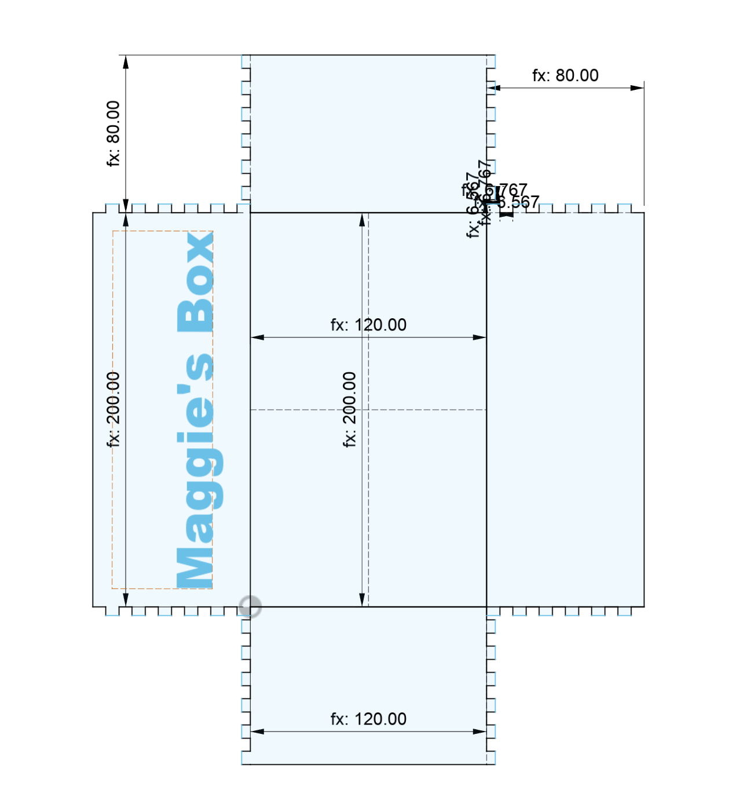
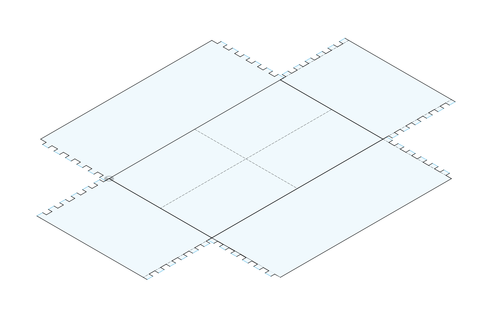
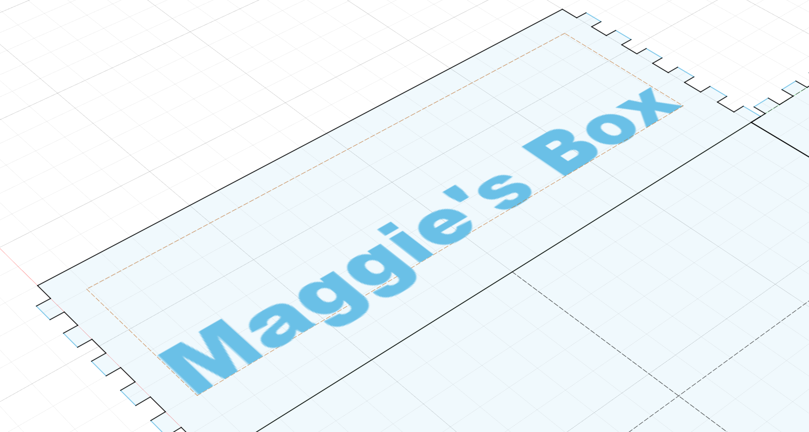
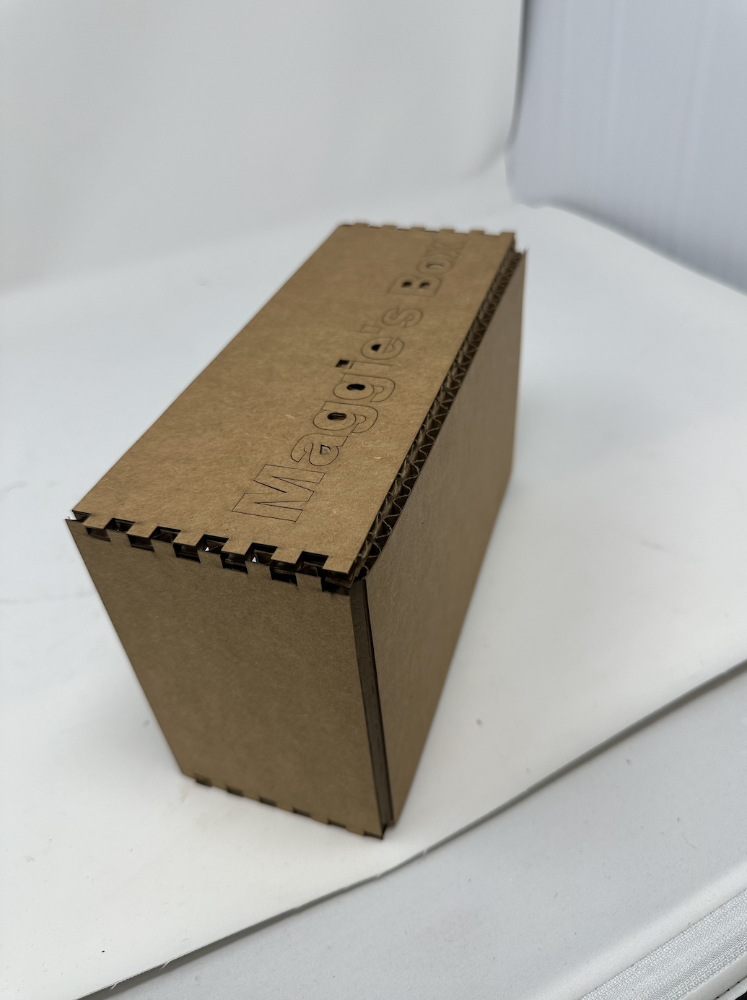
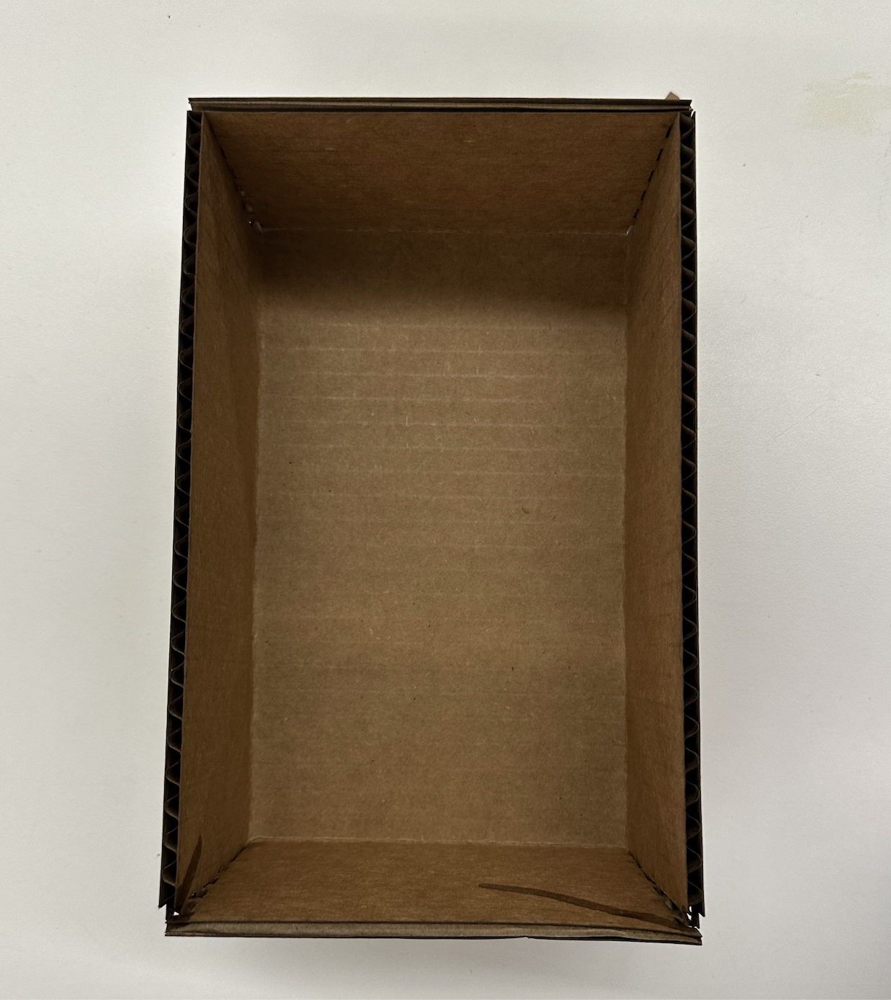
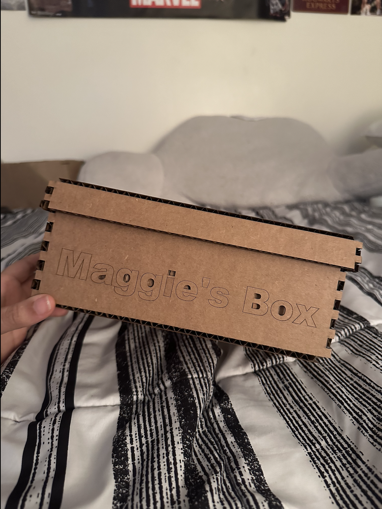
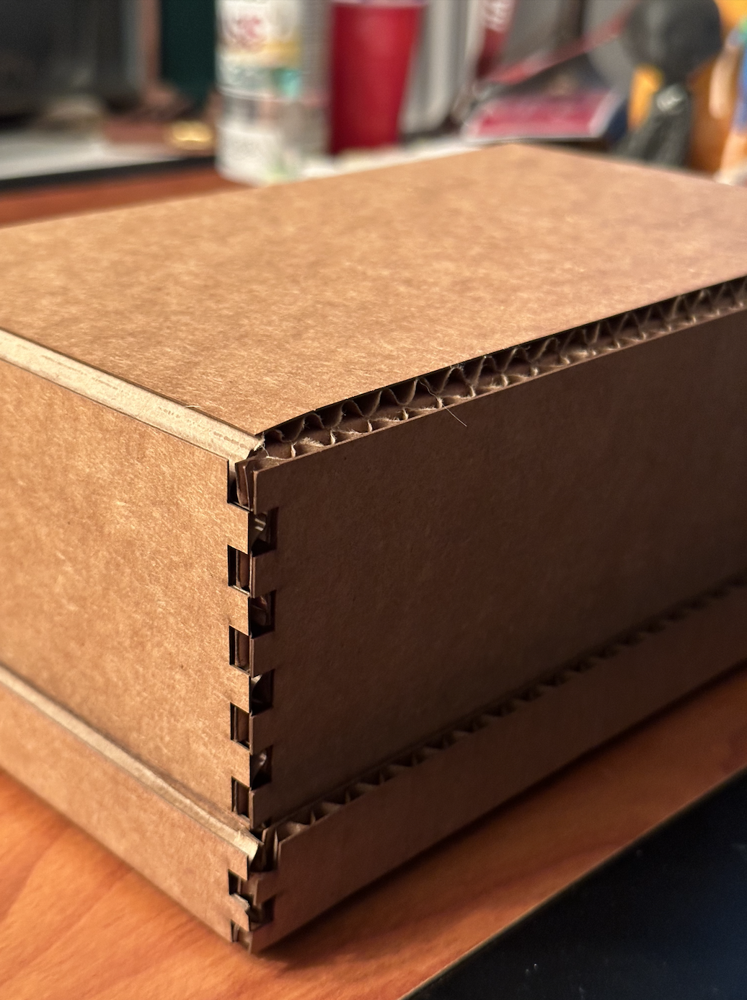

Week 2: 2D Design & Cutting
This week the assignment was broken into three parts:
- Create a box (shoebox-sized or slightly smaller) to hold your materials for the rest of the semester.
- Work through a Fusion 360 tutorial and document what you produce.
- Select at least 2 household objects or components from the lab. Measure them using calipers, and model them in Fusion 360. Create an assembly using these components, and document your work on your webpage.
1. Maggie's Box
Maggie's Box is the name of the box I made for this assignment (very creative name, I know). Maggie's Box consists of finger joints on the four corners of the cube and score lines that folded up from the bottom to give the base of the box a neater finish. Although, this may seem like a simple box, what makes Maggie's Box stand out is both its customization label and its handy lid. The lid is able to protect the electronics and other vulnerable parts inside it from the elements.

Below are steps on how to make your own *Insert Your Name*'s Box.
List of materials and resources used:
- Laser cutter
- Cardboard with thickness of 4.4mm
- Fusion 360 and Rhino for modelling
Steps for making Maggie's Box:
-
Creating the layout of the box: Use Fusion 360 to design the outline of your box.
 
- Start by adding necessary parameters. In my case I added the parameters: length of 200mm, width of 120mm, height of 80mm, number of finger joints as 6 and thickness as 4.4mm. I also added a kerf parameter which I initially set to 0.1mm.
- Next draw your initial rectangle from the origin, entering the necessary parameters. Draw two corner faces of your box as well, so you have three sides total that make up one corner of the box.
- The next step is to add finger joints. Ensure that your finger joints account for kerf. This entails that the fingers are slightly bigger (add kerf to the width) and the holes are slightly smaller (subtract kerf from the width). I used the formula derived from Nathan's tutorial of height / (2 * number of fingers) for the width of the finger joints.
- Instead of repeating this for the three other sides. We will use the mirror tool in Fusion 360. Add vertical and horizontal mirror lines to the base of the box. Select the necessary fingers and sides you would like to mirror and follow the instructions on Fusion to complete the mirroring process.
-
Adding personalization to the box: Use the text tool in Fusion 360 to add your own
personalization. The image above/below show's the text I added to the side of my box.

-
Editing your layout in Rhino: After saving your file as a .dxf. Open Rhino to make
final edits.
- Delete extra lines such as construction lines, mirror lines and any other possible duplicate lines in Rhino to ensure there are no complications when using the laser cutter. You can achieve this by using commands such as explode, seldup, trim, etc.
- Assign each line as either a cut, score or engrave line. In this case I assigned the text lines and the base lines to be score lines and the rest as cut. (I chose score instead of engrave for the text because score lines came out more clear during a test run).
- Print your file to the laser cutter software.
-
Laser cut away!
 
- Creating the lid of the box:
 Use Fusion 360 to design the outline of the lid. Follow the instructions from step 1 making sure to adjust parameters accordingly. (ensure the length and width account for double the thickness of the material, so it fits over the box!) Make necessary edits in Rhino and laser cut away!
Fin.
2. 2D Fusion Tutorial
Below are images of what I created during this Fusion 360 tutorial.
3. 3D Modelling and Assembly
I decided pick two household objects that I use quite frequently to model: a mug and my all-time favorite pen I brought from home. I made use of various Fusion 3D tutorials to get better suited to 3D modelling in fusion before I got started. Below are images of the mug and the pen that compare their 3D models to their real life shapes (I changed the color of the mug because white is a bit boring).
Real life pen vs 3D model pen
Real life mug vs 3D model mug
I then combined these two separate household items to be in one assembly. I thought it would be nice to put the pen in the mug to properly showcase the assembly. Below are images of the assembly and a video showing a 360 degree view of the two items together.